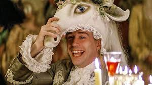
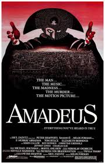

La película Amadeus ha sido ampliamente elogiada, pero también recibió varias críticas importantes, especialmente desde el punto de vista histórico y de su interpretación de los personajes. Una de las principales observaciones es que la obra no es fiel a los hechos reales. La relación entre Wolfgang Amadeus Mozart y Antonio Salieri está fuertemente dramatizada, ya que no existe evidencia de una rivalidad tan extrema ni de que Salieri haya tenido un papel directo en la muerte de Mozart, como sugiere la película.

Otra crítica frecuente es la forma en que se representa a Mozart. El film lo muestra como una persona inmadura, excéntrica y desordenada, lo que contrasta con la imagen histórica de un compositor altamente disciplinado en su trabajo. Aunque esta caracterización sirve para el conflicto dramático, muchos consideran que simplifica en exceso su personalidad y puede generar una visión injusta del músico.
